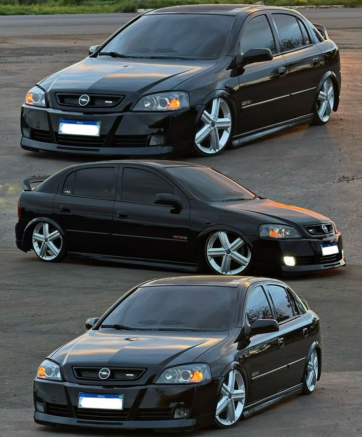
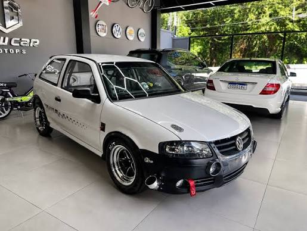
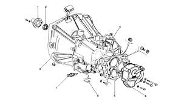

Este site foi criado para ensinar, de forma simples e direta, como os carros funcionam e como as peças se encaixam.

Entenda como o câmbio transmite a força do motor para as rodas.
Aprenda como funciona o motor e como ele gera energia para o carro.
Veja como pneus e suspensão influenciam na direção.